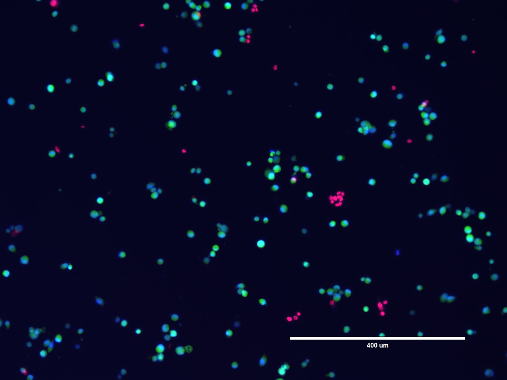

Cybernetica // v3
610 XP
E
⟐ 6 day streak
∴
Quests
Tree
Signal
← back
Intellect
Lab work, writing, PhD research
7/7 days active · mirror synced 2h ago
Collect-XP · last 7 days
⟠ read-only mirror
◈
Commits
3 repos · CRISPR-screen, ngs-pipe, thesis
23 · +115
▤
Notebook entries
ddPCR run · western blot · SKOV3 prep
4 · +40
✦
Deliverables
figure draft shipped to committee
1 · +25
Minted · zero taps
+180 XP
Note the work
+15 XP
Log it
Skip
Night
Paper